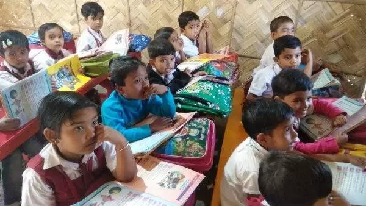

Leave a Legacy
Education is the only way out for 1000 + students of Sundarbans. Coming from families of fishermen and
tobacco
binders, they wish to have a future different from their forefathers. Your Scholarship will help talented
students to continue their education. It is a gift that will help them have a better future for themselves
and
their families. The best part is that your Scholarship will keep the talented and needy students year after
year.
Our school, Swapnapuron Siksha Niketan, has been bringing the best educational tools and training to the
remote
villages of Sundarbans for the last nine years. Our founder, Satarupa Majumder, a teacher herself, was moved
by
the kids’ plight in a trip to Sundarbans. She left her job to build the school and fuel these kids’ dreams,
cut
off from the mainstream. With dedicated staff and passion, the school has directly impacted the lives of
over
1000 kids. Your Scholarship will help these talented kids to realise their dreams.

NAME A SCHOLARSHIP
The endowment scholarship will provide an award every year to selected students based on their academics
and economic background criteria. The Scholarships will be perpetual and can be named after your beloved
ones. Scholarship fund denominations are given below based on the support you wish to provide for the
students.
2 Lakh Rupees
3 Lakh Rupees
5 Lakh Rupees

NAME A CLASSROOM
The school began from humble origins to finally get a building of its own. Classrooms are the main area for
the kids’ education. The classrooms will help the kids to shape not only their future but also their
community. Dedicate the name of your loved one to a classroom or an education centre and be a part of social
transformation for generations.
The donation amount shall include the classroom’s construction cost, and a minor part of the donation will
be invested, and the board will use the annual return from it for the yearly maintenance of your classroom.
Your Gifted Classroom will teach generations of kids.